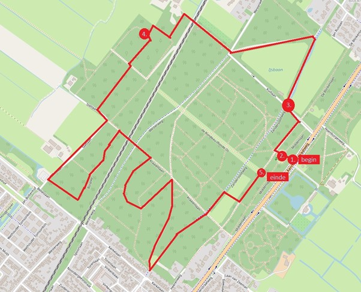
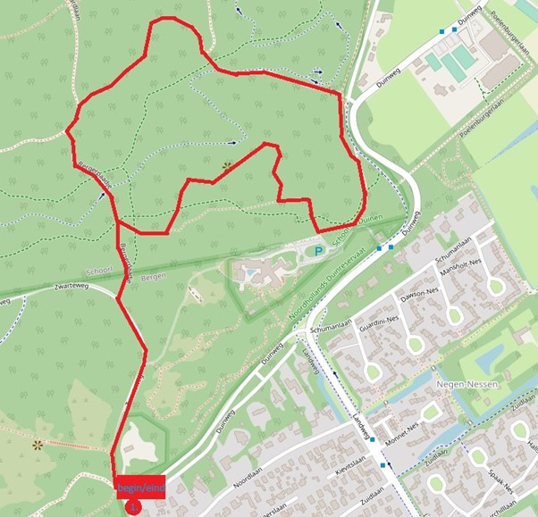
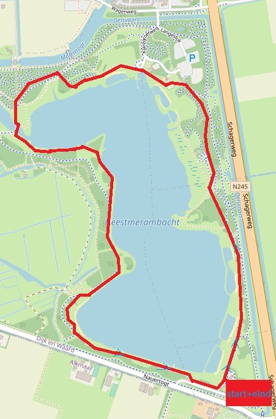

Voor de eerste aanbevolen wandeling hebben we een rondje door het centrum van Alkmaar.
De wandeling start op het station van Alkmaar. Deze wandeling is voldoende vriendelijk
voor beginners, de wandeling duurt circa 45 minuten over 3,5 kilometer. Er is van alles
te zien op deze route zoals; de Sint-Laurenskerk, de oudegracht, de accijnstoren,
monumenten als het huis met de kogel en het standbeeld van Truus Wijsmuller-Meijer,
ook het victoriepark komt op deze wandeling voorbij. Voor meer informatie over de
verschillende dingen die je op te zien krijgt op de wandeling klik hier.

Het Heilooërbos is een prachtige plek om te wandelen, met veel
mooie bospaden en weilanden, maar ook plekken met wat meer geschiedenis
zoals de kattenberg en het landhuis van Nijenburg .
Voor deze route bent u een uur aan de wandel over 4 kilometer,
De paden worden goed begehouden en zijn dus niet lastig om over
te wandelen. Het startpunt van deze wandeling is het busstation
kattenberg, de route is dus met het openbaar vervoer te bereiken.
Voor de wat fanatiekere wandelaar vanaf het centrum van Alkmaar tot
het Heilooërbos is een wandeling van ongeveer 50 minuten.
Voor additionele informatie en foto’s klik hier.

Wandeling door de duinen en het bos in Bergen is een hele leuke optie,
op vele plekken zijn er prachtige uitzichten over de duinen te vinden
en door de duinen zelf heenlopen komt ook voor op deze route.
Doordat ook door de duinen wordt gelopen op deze wandeling is het terrein
wat lastiger, meerdere keren zal u door het zand een aantal duinen op
en af wandelen. De lengte van de wandeling is 1 uur en 15 minuten over
4,5 kilometer. Er is mogelijkheid om gratis te parkeren tegenover
het restaurant ‘duinvermaak’. Voor meer informatie en foto’s: hier.

Een rondje wandelen om het meer van Geestmerambacht is heerlijk vooral met mooi weer.
In het meer is er mogelijkheid om te zwemmen ook is er een restaurant
en openbare wc’s. Deze wandeling duurt 1,5 uur over 5,6 kilomeeter,
er is gratis te parkeren naast het restaurant. Additionele informatie en foto’s.
